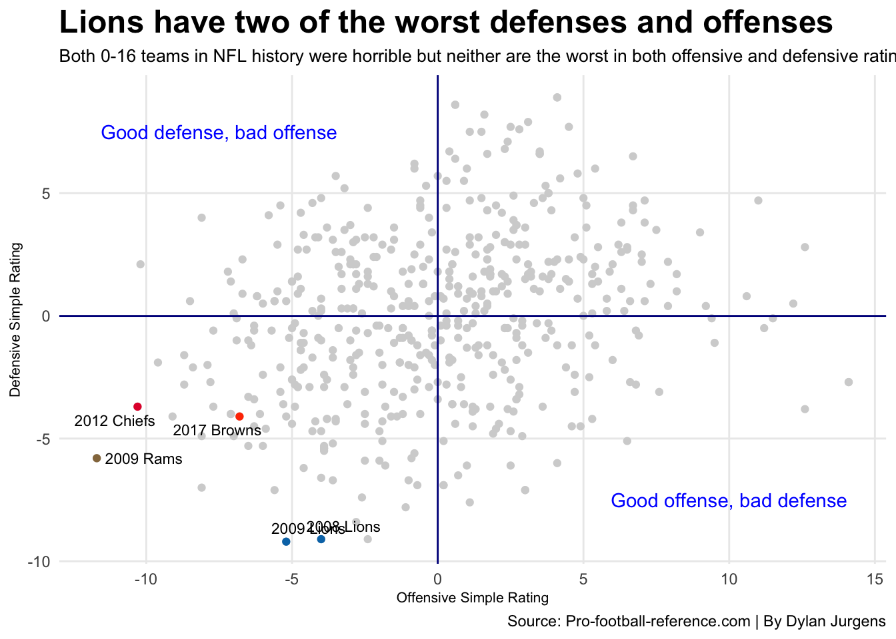
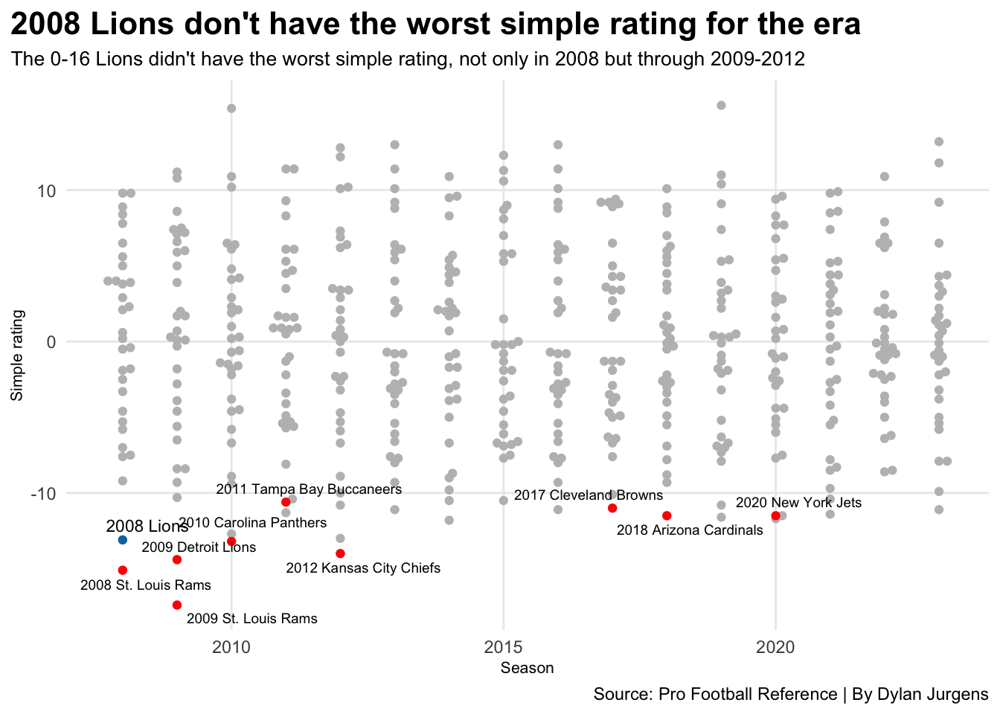

The 2008 Detroit Lions were the worst 0-16 team, but has there been worse?
Author
Dylan Jurgens
Published
April 14, 2024
In the existence of the National Football League, there have only been two 0-16 teams in its history. Those being the 2008 Detroit Lions and most recently the 2017 Cleveland Browns. Both teams had horrendous seasons, however this question comes to mind. Who was worse? Here lies the answer to that question.
So, Sports Reference’s Pro Football Reference website keeps track of every season in the league’s existence. Sports reference has also created a simple rating system, which is labeled as SRS. SRS is a combination of point differential and strength of schedule. Specifically for its pro football website, it has an offensive and defensive simple rating for each team as well.
Now looking at each season from 2008 to 2023, you can easily say who the worst teams are by just looking at the records from the seasons. However, when you look more closely at each season, you might be surprised at what you find out.
Code
library(tidyverse)library(ggrepel)library(gt)library(ggbeeswarm)NFL08_23 <-read_csv("~/Documents/SPMC 350 /Project1 Data Files/NFL08_23.csv")badteams <-c("2008 Detroit Lions", "2008 St. Louis Rams", "2009 Detroit Lions", "2009 St. Louis Rams", "2012 Kansas City Chiefs", "2020 New York Jets", "2010 Carolina Panthers", "2011 Tampa Bay Buccaneers", "2018 Arizona Cardinals", "2017 Cleveland Browns")NFL08_23 |>arrange(PD) |>filter(Team %in% badteams) |>select(Team, W, L, T, MoV, PD, SRS) |>gt() |>cols_label(Team="Team",W="Wins",L="Losses",T="Ties",PD="Point Diff.",SRS="Simple Rating" ) |>tab_header(title ="2009 St. Louis is worse than 2008 Detroit",subtitle ="Based off point differential and simple rating, the 2009 Rams are statistically worse than the 0-16 Lions and Browns. When comparing both 0-16 teams, the 2008 Lions are the worst of the two." ) |>tab_source_note(source_note =md("**By:** Dylan Jurgens | **Source:** [Pro Football Reference](https://www.pro-football-reference.com/)") ) |>tab_style(style =cell_text(color ="black", weight ="bold", align ="left"),locations =cells_title("title") ) |>tab_style(style =cell_text(color ="black", align ="left"),locations =cells_title("subtitle") ) |>tab_style(locations =cells_column_labels(columns =everything()),style =list(cell_borders(sides ="bottom", weight =px(3)),cell_text(weight ="bold", size=14) ) ) |>opt_row_striping() |>opt_table_lines("none") |>tab_style(style =list(cell_fill(color ="#0076B6"),cell_text(color ="#FFFFFF") ),locations =cells_body(rows = Team =="2008 Detroit Lions") ) |>opt_row_striping() |>opt_table_lines("none") |>tab_style(style =list(cell_fill(color ="#FF3C00"),cell_text(color ="#FFFFFF") ),locations =cells_body(rows = Team =="2017 Cleveland Browns") )
2009 St. Louis is worse than 2008 Detroit
Based off point differential and simple rating, the 2009 Rams are statistically worse than the 0-16 Lions and Browns. When comparing both 0-16 teams, the 2008 Lions are the worst of the two.
Since 2008, the 2009 St. Louis Rams had statistically the worst offensive season performance according to offensive simple rating. At a horrific -11.7 mark, the next closest was the 2012 Kansas City Chiefs, which had an offensive simple rating of -10.3. You can also see where the 2008 Lions are, and you might also be able to see that the 0-16 Lions had a below average offense but it’s not the worst. However, it was their defense that held them back. Detroit had a -9.1 defensive simple rating in 2008. To add to the sadness, the Lions defense didn’t get any better the year after. In 2009, Detroit boasted a -9.2 defensive simple rating. However, their defense allowed less points in 2009, compared to 2008.
Code
detroit <- NFL08_23 |>filter(Team=="2008 Detroit Lions")detroit2 <- NFL08_23 |>filter(Team=="2009 Detroit Lions")cleveland <- NFL08_23 |>filter(Team=="2017 Cleveland Browns")stlouis <- NFL08_23 |>filter(Team=="2009 St. Louis Rams")kansascity <- NFL08_23 |>filter(Team=="2012 Kansas City Chiefs")ggplot() +geom_point(data=NFL08_23, aes(x=OSRS, y=DSRS), color ="lightgrey") +geom_point(data=detroit, aes(x=OSRS, y=DSRS), color="#0076B6") +geom_point(data=cleveland, aes(x=OSRS, y=DSRS), color="#FF3C00") +geom_point(data=stlouis, aes(x=OSRS, y=DSRS), color="#95774C") +geom_point(data=kansascity, aes(x=OSRS, y=DSRS), color="#E31837") +geom_point(data=detroit2, aes(x=OSRS, y=DSRS), color="#0076B6") +geom_text_repel(data=detroit, aes(x=OSRS, y=DSRS, label="2008 Lions"), size=3) +geom_text_repel(data=cleveland, aes(x=OSRS, y=DSRS, label="2017 Browns"), size=3) +geom_text_repel(data=stlouis, aes(x=OSRS, y=DSRS, label="2009 Rams"), size=3) +geom_text_repel(data=kansascity, aes(x=OSRS, y=DSRS, label="2012 Chiefs"), size=3) +geom_text_repel(data=detroit2, aes(x=OSRS, y=DSRS, label="2009 Lions"), size=3) +geom_vline(xintercept =0.000390625, color="darkblue") +geom_hline(yintercept =-0.002929687, color="darkblue") +geom_text(aes(x=-7.5, y=7.5, label="Good defense, bad offense"), color="blue") +geom_text(aes(x=10, y=-7.5, label="Good offense, bad defense"), color="blue") +labs(x ="Offensive Simple Rating",y ="Defensive Simple Rating",title ="Lions have two of the worst defenses and offenses",subtitle ="Both 0-16 teams in NFL history were horrible but neither are the worst in both offensive and defensive rating.",caption ="Source: Pro-football-reference.com | By Dylan Jurgens" ) +theme_minimal() +theme(plot.title =element_text(size =18, face ="bold"),axis.title =element_text(size =8),plot.subtitle =element_text(size =10),panel.grid.minor =element_blank() )

Detroit had two of the worst offenses and defenses for the era. Like mentioned before, the 2009 Lions, who went 2-14, were statistically worse than the 0-16 Lions from the year before. What made these teams bad were their defenses but the offenses weren’t any better. The 2017 Browns were not statistically as bad as both of those teams, with a better defensive rating. However, Cleveland’s offense was pretty bad. You think the 0-16 Browns’ offense was bad, the 2009 Rams offense was off the charts bad.
Code
badteams <-c("2008 St. Louis Rams", "2009 Detroit Lions", "2009 St. Louis Rams", "2012 Kansas City Chiefs", "2020 New York Jets", "2010 Carolina Panthers", "2011 Tampa Bay Buccaneers", "2018 Arizona Cardinals", "2017 Cleveland Browns")Badteams <- NFL08_23 |>filter(Team %in% badteams)detroit <- NFL08_23 |>filter(Team =="2008 Detroit Lions")ggplot() +geom_beeswarm(data=NFL08_23,aes(x=Season, y=SRS),color="grey" ) +geom_beeswarm(data=detroit,aes(x=Season, y=SRS),color="#0076B6" ) +geom_beeswarm(data=Badteams,aes(x=Season, y=SRS),color="red" ) +geom_text_repel(data=detroit,aes(x=Season, y=SRS, label="2008 Lions"),size=3 ) +geom_text_repel(data=Badteams,aes(x=Season, y=SRS, label=Team),size=2.5 ) +labs(x="Season", y="Simple rating", title="2008 Lions don't have the worst simple rating for the era", subtitle="The 0-16 Lions didn't have the worst simple rating, not only in 2008 but through 2009-2012", caption="Source: Pro Football Reference | By Dylan Jurgens") +theme_minimal() +theme(plot.title =element_text(size =16, face ="bold"),axis.title =element_text(size =8), plot.subtitle =element_text(size=10), panel.grid.minor =element_blank(),plot.title.position ="plot" )

Overall, when comparing the two 0-16 teams in the history of the NFL, the 2008 Lions clear the 2017 Browns. However, it’s clear that both teams weren’t even the worst teams in this era of the NFL. Since 2021, NFL teams have played 17 games per regular season. It makes you wonder, will we ever see a 0-17 team. Time will tell, but for now, there have only been two 0-16 teams among the other completely horrific season preformances.